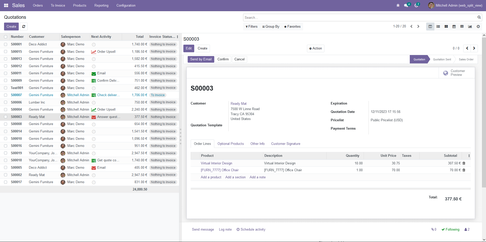
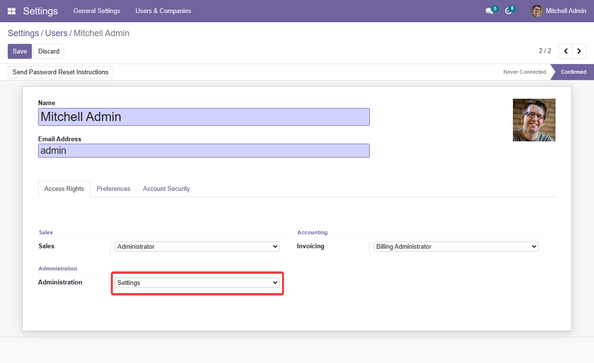

Web Split View is a dual-view layout, seamlessly dividing the screen into list and detail sections for CRUD operations.
The "Web Split View" is an add-on for the Odoo framework designed to enhance the user interface and user experience by introducing a new custom view. The primary purpose of this add-on is to provide a split-screen view, dividing the interface into two distinct sections: a list view and a detail form view.
Web Split View add-on brings a modern and intuitive interface to Odoo, facilitating a more efficient and enjoyable user interaction with data through the innovative split-screen design.
The add-on introduces a split-screen interface, allowing users to simultaneously view a list of items and the detailed information of a selected item.
The list view presents a comprehensive list of items, enabling users to quickly scan and identify the items they are interested in.
The detail form view displays in-depth information about a selected item. It provides a closer look at the details, attributes, and related information associated with the chosen item.
Users have the ability to interactively select items from the list view, triggering the display of corresponding details in the adjacent form view.
The detail form view supports essential CRUD (Create, Read, Update, Delete) operations. Users can create new items, edit existing ones, and delete items directly from the detail form view.
The Web Split View aims to enhance user productivity by streamlining the workflow. Users can efficiently navigate between the list view and detail form view to manage and interact with data.
The add-on is designed with customization in mind, providing flexibility for developers and administrators to adapt the split view functionality to meet specific business requirements.
As an Odoo add-on, Web Split View seamlessly integrates into the Odoo framework, leveraging its robust features and maintaining consistency with the overall Odoo user experience.
To create Split View
Go to Settings/Users & Companies/Users/{user-name} and check out.
Go to Settings/General Settings and Turn the Developer Mode on.
For example, to create new Split View of Sales Order Quotation.
If you set this inputs empty, it will get the default List and Form View to display.
To make Split View is the default view when you go to this Menu, check Make default view ✅
Finnally, click button Create to finish.
You can resize your List & Form View by hover and move this line.
To define Split View for developer
- Define `ir.actions.act_window` with `view_mode` contain `split`.
- Define `ir.ui.view` with attributes `tree_view_ref/form_view_ref` is xmlid of tree/form has been defined before.
For example:
For example: